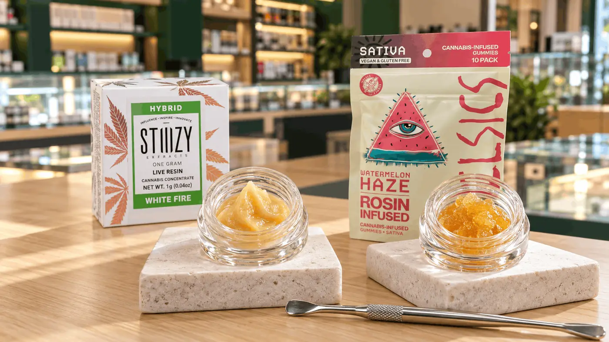

Raw Garden Live Resin Carts: What Makes Them Different?
September 2, 2026 · 12 min read

Walk into a California dispensary and the vape menu can feel like alphabet soup with terpenes.
Distillate. Live resin. Live sauce. Rosin. Disposable. Cartridge. Refined Live Resin™.
For shoppers considering Raw Garden live resin carts, understanding those terms is more useful than simply chasing the highest THC number on the menu.
Raw Garden is a California cannabis brand known for products made from cannabis harvested and frozen to preserve more of the plant’s aromatic compounds before extraction. Its vape lineup is especially recognizable for Refined Live Resin™ cartridges, which combine a highly refined cannabinoid fraction with cannabis-derived terpenes originating from fresh-frozen plant material.
That distinction is important because “live resin” and “distillate” describe different approaches to cannabis concentrates.
So, what actually makes Raw Garden live resin carts different, and what should you check before buying one?
TLDR Quick Guide
Here’s the quick version of Raw Garden live resin carts:
- Raw Garden is a California cannabis brand.
- The brand grows cannabis on its own farm in Santa Barbara County.
- Its cannabis is harvested and rapidly frozen rather than traditionally dried and cured before extraction.
- Raw Garden’s well-known vape products are marketed as Refined Live Resin™.
- The brand describes its process as separating cannabinoids and cannabis terpenes before recombining them.
- Raw Garden says its products contain no added flavors or non-cannabis-derived terpenes.
- Live-resin-style products are generally designed to preserve more characteristics of fresh cannabis than conventional distillate.
- THC percentage alone doesn’t determine cartridge quality.
- Cultivar, terpene profile, freshness, hardware, and storage all deserve attention.
- Current strains and products can rotate, so check inventory before choosing.
You can explore Raw Garden at Wellgreens, browse other Wellgreens cannabis brands, or check in-stock cannabis products before visiting.
Detailed Breakdown

What Are Raw Garden Live Resin Carts?
Raw Garden is a California cannabis producer with roots in Santa Barbara County.
The company cultivates cannabis and uses fresh-frozen material to produce several concentrate and vape products.
When people refer to Raw Garden live resin carts, they’re commonly talking about the brand’s Refined Live Resin™ cartridges.
That wording deserves attention.
These aren’t simply conventional distillate cartridges with generic flavoring added afterward. Raw Garden describes its process as capturing cannabis-derived terpenes from fresh-frozen material, refining the cannabinoid portion, and then recombining those components.
The goal is a potent, consistent cartridge that retains characteristics associated with the source cannabis.

What Does “Live” Mean in Live Resin?
No, the cannabis isn’t alive inside the cartridge.
“Live” refers to how the harvested plant material is preserved before extraction.
Cannabis used for traditional cured products generally goes through drying and curing after harvest.
For live resin, harvested cannabis is instead rapidly frozen and kept frozen before extraction.
Why Freeze Cannabis After Harvest?
Cannabis contains volatile aromatic compounds, including terpenes.
Some of these compounds can change or be lost during post-harvest drying and curing.
Freezing the plant shortly after harvest is intended to preserve more of that fresh plant’s chemical and aromatic profile until extraction.
That’s one reason live resin can smell and taste noticeably different from concentrates made using traditionally dried material.
What Is Refined Live Resin?
This is where Raw Garden live resin carts become more specific.
Raw Garden calls its cartridge oil Refined Live Resin™.
The process goes beyond simply extracting fresh-frozen cannabis and filling cartridges with the resulting concentrate.
According to the brand’s description, cannabinoids and terpenes are separated during processing. The cannabinoid portion is refined, while cannabis-derived terpenes are preserved and later recombined.
That creates a product that occupies an interesting position in the vape category.
It aims to combine:
- High cannabinoid concentration
- Cannabis-derived terpenes
- Fresh-frozen source material
- Consistent cartridge performance
Understanding that process helps explain why Raw Garden’s cartridges may look and behave differently from some traditional live-resin oils.

Raw Garden Live Resin Carts vs Traditional Distillate
Distillate is one of the most common bases used in cannabis vape products.
It is highly refined and typically contains a high concentration of a targeted cannabinoid, often THC.
During extensive refinement, however, many of the original aromatic compounds associated with the cannabis can be removed.
Terpenes may then be added back to create the desired flavor and aroma profile.
So What’s the Difference?
The meaningful question is where those aromatic compounds come from and how the product was made.
Raw Garden emphasizes cannabis-derived terpenes captured from fresh-frozen material.
Conventional flavored distillate products may use different terpene sources or flavoring approaches depending on the manufacturer.
Neither label alone tells you whether you’ll personally enjoy a cartridge.
But they represent different product philosophies.
For a deeper comparison, read Wellgreens’ guide to live resin carts vs distillate carts.
Are Raw Garden Carts “Real” Live Resin?
This question comes up frequently because Raw Garden uses the term Refined Live Resin™ rather than simply describing every cartridge as traditional live resin.
The distinction is worth understanding instead of arguing over terminology.
Raw Garden starts with fresh-frozen cannabis and captures cannabis-derived compounds from that material. Its cartridge process also includes significant refinement of the cannabinoid portion before the components are recombined.
So if you’re comparing Raw Garden live resin carts with a less-refined live-resin cartridge, don’t assume the oils were processed identically.
Read the product description.
The words around “live resin” matter.

Fresh-Frozen Cannabis Is Central to the Product
Raw Garden places substantial emphasis on starting material.
Its cannabis is grown in California and harvested for fresh freezing.
Why does that matter?
Because extraction can’t preserve compounds that have already disappeared from poor or mishandled starting material.
Quality concentrate production begins before the extraction equipment ever turns on.
Cultivation, harvest timing, freezing, storage, extraction, refinement, filling, and final product handling can all influence what ends up in the cartridge.
Terpenes Are a Big Part of the Difference
If you’ve ever smelled citrus peel, pine needles, lavender, or fresh herbs, you’ve encountered terpenes outside cannabis.
Cannabis produces many of the same families of aromatic compounds.
Common cannabis terpenes include:
- Limonene
- Myrcene
- Caryophyllene
- Pinene
- Linalool
- Humulene
These compounds contribute significantly to aroma and flavor.
Raw Garden emphasizes cannabis-derived terpenes rather than artificial flavors or terpenes sourced from unrelated plants.
For flavor-focused shoppers, that’s one of the more meaningful characteristics of the product.

Don’t Expect Every Raw Garden Cart to Taste the Same
“Raw Garden flavor” isn’t one flavor.
Different cultivars and blends can produce very different aromatic profiles.
One cartridge may lean toward:
- Citrus
- Tropical fruit
- Berry
- Floral notes
Another may be more:
- Earthy
- Piney
- Herbal
- Spicy
- Fuel-forward
That’s why choosing solely by brand can be limiting.
Once you’ve decided to try Raw Garden live resin carts, the next question should be:
Which cultivar or blend sounds most appealing?
Read the Label Instead of Just the Front of the Package
Cannabis packaging contains much more useful information than the giant THC number that usually gets everyone’s attention first.
Depending on the product and label, you may find:
- THC content
- CBD content
- Total cannabinoids
- Product type
- Package information
- Batch or lot information
- Testing information
- Manufacturer details
- Required California warnings
Use that information.
A cartridge isn’t a Pokémon card. The biggest number doesn’t automatically win.

Why THC Percentage Isn’t Everything
THC is obviously relevant when comparing cannabis products.
It isn’t the entire product.
Two cartridges with similar THC percentages can taste completely different because their terpene and cannabinoid profiles aren’t identical.
Similarly, a slightly higher THC percentage doesn’t automatically mean:
- Better flavor
- Better hardware
- Better freshness
- Better manufacturing
- A better match for your preferences
If your main reason for considering Raw Garden live resin carts is flavor and cannabis character, ignoring everything except THC defeats much of the point.
How Do Raw Garden Carts Compare With Other Live Resin Carts?
The live-resin category isn’t standardized around one identical manufacturing process.
Different producers can use different:
- Cultivation sources
- Harvest methods
- Freezing procedures
- Extraction systems
- Refinement steps
- Terpene handling
- Cartridge hardware
Some live-resin products may be relatively close to the initial extracted concentrate.
Others, including refined products, may undergo additional processing before filling.
That doesn’t make every heavily processed product bad or every minimally processed product automatically superior.
It means you should understand what you’re buying.

What About Rosin?
Live resin and live rosin are often confused because both can start with fresh-frozen cannabis.
The major distinction is extraction.
Live resin generally involves solvent-based extraction followed by appropriate processing and removal of extraction solvents.
Live rosin is produced mechanically using heat and pressure after cannabis material has typically been processed into hash.
Those methods create different concentrates.
If you’re comparing vape products, don’t treat “live resin” and “live rosin” as interchangeable labels.
Cartridge Hardware Can Make or Break the Experience
Excellent extract still needs appropriate hardware.
Cartridges need to manage oil consistently while dealing with heat, storage, movement, and repeated use.
Poor hardware performance can produce:
- Clogging
- Leaking
- Weak vapor
- Inconsistent heating
- Burnt flavor
- Oil remaining inaccessible inside the cartridge
Raw Garden uses purpose-built cartridge hardware for its vape products, but consumers should still store and use cartridges appropriately.
Hardware quality is one of the factors Wellgreens discusses in its weed pens, vape oils, and live resin concentrates guide.

Make Sure You Have Compatible Hardware
Before purchasing a cartridge, confirm what battery or device it requires.
Many cannabis cartridges use the common 510-thread format.
That doesn’t mean you should assume every vape product on a dispensary menu uses exactly the same system.
Check the package or product listing.
If you’re buying your first cartridge, ask whether you need a separate battery.
It takes approximately five seconds and prevents a remarkably avoidable disappointment at home.
Storage Matters After Purchase
Cannabis vape cartridges don’t benefit from sitting in extreme heat or direct sunlight.
Appropriate storage can help protect both the oil and hardware.
As a general rule:
- Follow manufacturer storage instructions.
- Keep products away from children and pets.
- Avoid excessive heat.
- Avoid prolonged direct sunlight.
- Store cartridges securely.
- Keep packaging when useful for product information.
Don’t leave a vape cartridge baking on a car dashboard and expect laboratory-level consistency afterward.
California sunshine is excellent at many things. Gentle cannabis storage isn’t one of them.

Why Authenticity Matters With Popular Vape Brands
Popular cannabis brands can attract counterfeit packaging and unauthorized products.
That makes the source of your cartridge important.
Buying from a licensed dispensary provides access to regulated cannabis products with required California labeling and testing.
Be cautious with products obtained through:
- Informal sellers
- Social media accounts
- Unlicensed delivery operations
- Unknown websites
- Unverified third parties
A familiar logo doesn’t establish authenticity by itself.
For California cannabis vape products, where you buy matters almost as much as what you buy.
What Should You Check Before Buying?
Before choosing Raw Garden live resin carts, take a minute to evaluate the specific product.
Check the Extract Description
Is it Refined Live Resin™, another Raw Garden product format, or something else?
Know which product you’re actually comparing.
Check the Cultivar or Blend
Flavor preferences vary dramatically.
Look for profiles that match what you already tend to enjoy.
Check Cannabinoid Information
Review THC, CBD, and total cannabinoid information rather than focusing exclusively on one number.
Check Product Information
Look at available packaging, batch, and testing details.
Check Compatibility
Make sure the cartridge works with the hardware you own or plan to purchase.
Check Current Pricing
Dispensary pricing and promotions change.
Use the current menu instead of an old screenshot or social-media post.

Who Might Prefer Raw Garden Live Resin Carts?
Raw Garden may appeal particularly to adult consumers who prioritize:
- Cannabis-derived terpene profiles
- Fresh-frozen source material
- California-grown cannabis
- High-potency vape products
- Strain or cultivar variety
- Convenient cartridge formats
- A widely recognized California cannabis brand
That doesn’t mean they’re automatically the best cartridge for every shopper.
Some consumers may prefer traditional live resin with less refinement, solventless rosin, cured resin, or straightforward distillate.
Product categories exist because preferences differ.
Who Might Prefer Something Else?
You may want to compare other options if you’re specifically looking for:
- Solventless extraction
- Live rosin
- Cured resin
- Lower-THC formulations
- Different cannabinoid ratios
- Disposable hardware
- A particular cultivator collaboration
Wellgreens carries multiple cannabis brands, making it easier to compare product styles rather than forcing every shopper into the same category.

How to Shop Raw Garden at Wellgreens
Inventory changes as products sell through and new drops arrive.
Rather than assuming a particular cultivar is available, check Wellgreens’ in-stock cannabis products before visiting.
You can also browse the dedicated Raw Garden page for current brand information.
Eligible adult customers in supported San Diego County areas can review Wellgreens Delivery for current ordering and delivery availability.
Checking the menu first is especially useful if you’re looking for one specific cartridge rather than simply browsing the brand.
Are Raw Garden Live Resin Carts Worth Trying?
That depends on what you want from a vape.
If your priorities include fresh-frozen source cannabis, cannabis-derived terpenes, strong cannabinoid content, and a convenient cartridge format, Raw Garden live resin carts are a relevant option to compare.
If you’re specifically seeking traditional unrefined live resin or solventless rosin, pay close attention to the product description instead of assuming Refined Live Resin™ is identical to those categories.
The most useful shopping mindset is simple:
Know the extract. Know the cultivar. Know the source.
Then decide whether the product matches your preferences.

Key Takeaways
- Raw Garden live resin carts are commonly marketed as Refined Live Resin™ cartridges.
- Fresh-frozen cannabis is central to Raw Garden’s process. Freezing shortly after harvest is intended to preserve volatile aromatic compounds before extraction.
- Refined Live Resin™ isn’t identical to every traditional live-resin product. Raw Garden further refines the cannabinoid portion and recombines it with cannabis-derived terpenes.
- Raw Garden emphasizes cannabis-derived terpenes. The brand says it doesn’t rely on added flavors or non-cannabis-derived terpenes in these products.
- Cultivar matters. Different Raw Garden cartridges can have dramatically different aroma and flavor profiles.
- THC percentage isn’t a complete quality score. Terpenes, freshness, hardware, manufacturing, and personal preference also matter.
- Live resin and live rosin aren’t the same thing. Their extraction processes differ significantly.
- Cartridge hardware matters. Even high-quality concentrate needs reliable hardware and appropriate storage.
- Purchase regulated cannabis vapes from licensed retailers. Popular vape brands can be targets for counterfeit or unauthorized products.
- Check current availability before shopping. Browse Wellgreens Dispensary for Raw Garden and other regulated cannabis products currently offered in the San Diego area.
FAQs
01What makes Raw Garden live resin carts different from regular vape carts?
Raw Garden live resin carts use fresh-frozen cannabis as their starting material and are commonly sold as the brand’s Refined Live Resin™ products. Raw Garden describes the process as refining cannabinoids while preserving and recombining cannabis-derived terpenes rather than simply adding generic flavor to a conventional vape base. That creates a different product approach from many standard distillate cartridges.
02Are Raw Garden carts distillate or live resin?
Raw Garden markets its well-known cartridge line as Refined Live Resin™, which involves fresh-frozen cannabis followed by additional cannabinoid refinement and terpene recombination. Because of that additional processing, shoppers shouldn’t assume the product is identical to every traditional live-resin cartridge from another producer. Check the exact product label and description when comparing extract types.
03Do Raw Garden live resin carts contain added flavors?
Raw Garden states that its Refined Live Resin™ products use cannabis-derived terpenes and aren’t made with added artificial flavors or non-cannabis-derived terpenes. Different cultivars and blends can still produce noticeably fruity, citrus, earthy, floral, spicy, or fuel-like aromatic profiles naturally associated with the cannabis. Always verify current information on the specific product packaging because formulations and product lines can change.
04Are Raw Garden live resin carts stronger than distillate carts?
Potency varies by individual product, so the words “live resin” or “distillate” alone don’t determine which cartridge contains more THC. Raw Garden’s refinement process can produce high cannabinoid concentrations, but consumers should compare the actual labeled cannabinoid information for the products they’re considering. Potency also shouldn’t be treated as the only measure of quality because flavor, terpene profile, hardware, freshness, and personal preference matter.
05Where can I find Raw Garden live resin carts in San Diego?
Wellgreens carries Raw Garden among its cannabis brand offerings, although specific cartridges and cultivars can change with inventory. Check Wellgreens’ current in-stock menu or Raw Garden brand page before visiting if you’re looking for a particular release. Eligible adults in supported service areas can also check Wellgreens’ delivery options for current availability.
Shop this guide
Keep reading

Why Is Your Cake Disposable Vape Not Hitting and What Should You Check?
You pick up your Cake disposable vape, take a draw, and… nothing. No vapor, no response, just a device that seems to have called it quits…

Cannabiotix Flower vs Concentrates: Which Product Type Fits Your Needs?
If you’re comparing Cannabiotix flower vs concentrates, you’ve probably noticed that both categories offer distinct characteristics, from…

Live Rosin vs Live Resin: Which Concentrate Should You Choose?
Two cannabis concentrates. Similar names. Very different production methods. If you’ve been comparing live rosin vs…
Ready to Start?
Premium cannabis. Expert guidance. Fast pickup. Join thousands of San Diegans who trust Wellgreens.